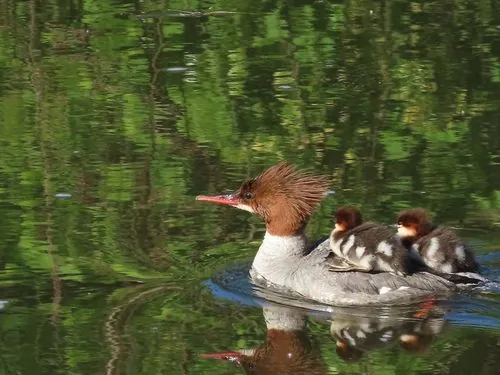

鸟类 · 动物界
普通秋沙鸭 Mergus merganser

体形较大的秋沙鸭，雄鸟头颈墨绿、体羽白中带粉，喙细长带锯齿，擅长潜水捕鱼，常见于北方河流湖泊。
- 分类
- 门脊索动物门纲鸟纲目雁形目科鸭科属秋沙鸭属
- 栖息环境
- 河流、湖泊、水库与沿海水域，偏好水流较急、水质清澈的河段
- 地理分布
- 北半球广泛分布，中国北方有繁殖、南方有越冬种群
- 保护级别
- IUCN 无危（LC）；中国“三有”保护动物
物种志
普通秋沙鸭体长 58–68 cm，体重 900–1700 g。繁殖期雄鸟头部和颈部呈墨绿色，体羽白色并透出淡粉色，背部和翅膀黑色；雌鸟头部栗褐色，颈部和上胸白色，身体灰色。它的喙细长而带锯齿，适合夹住滑溜的鱼。
普通秋沙鸭广泛分布于北半球的河流、湖泊、水库和沿海水域，中国北方有繁殖，南方有越冬种群。它们擅长潜水捕鱼，常在水流较急的河段活动，以鱼类、水生昆虫和甲壳类为食。繁殖期在河岸边或树洞中营巢，每窝产卵 8–12 枚，孵化 32–35 天。普通秋沙鸭目前被列为无危物种，中国将其列入“三有”保护名录，是北方河流中常见的冬候鸟。
形态与习性
- 食性鱼类为主，也吃水生昆虫和甲壳类
- 体长58–68 cm
- 体重900–1700 g
- 繁殖每窝 8–12 枚卵，孵化 32–35 天
- 潜水擅长潜水捕鱼，能潜入数米深的水中
- 寿命野外约 10–15 年
趣味知识
- 普通秋沙鸭的喙细长并带锯齿，能牢牢夹住滑溜的鱼。
- 它擅长潜水捕鱼，常在清澈的河流中顺流而下觅食。
- 繁殖期雌鸟常在河岸树洞或石缝中营巢。